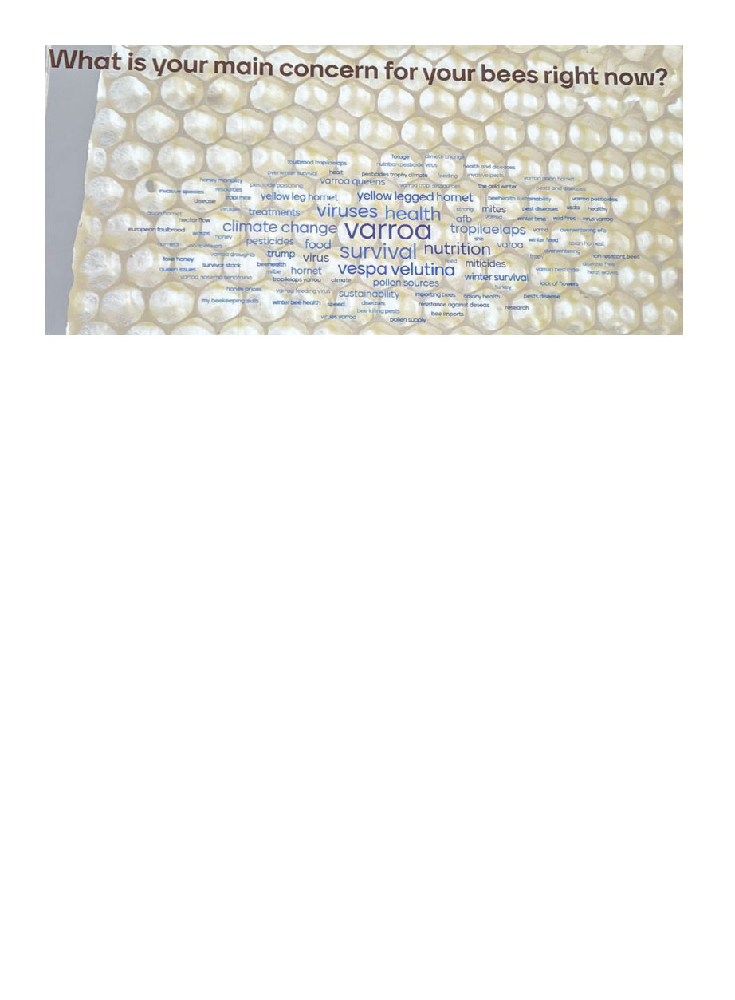

American Bee Journal
1316
Another particularly interesting
presentation for me was the Swed-
ish Agricultural University (SLU)
presentation on their famous “Bond
method,” or “Live and Let Die” resis-
tance program on the Swedish Island
of Gotland, “The Good, the Bad, and
the Ugly: Insights and trends from a
20 year natural selection experiment.”
This project is often cited by the many
people very eager to just let varroa rip
in order to develop natural resistance,
but they pointed out that the popula-
tion of colonies in the study area was
reduced by about 90% by 2003 …
and never did bounce back. Ever since
then the numbers have held steady at
about 10% of the levels they had been
at prior to the mass varroa die-off.
They caution:
The growing trend of “natural” or
treatment-free beekeeping, when
advocating for minimal intervention
to improve bee health, is an over-
simplification of natural selection
processes, at the cost of high mor-
tality rates.
Evolution through natural se-
lection does not always guarantee
improved prospects for long term
survival ...
Successful treatment-free bee-
keeping is possible but requires dili-
gent and well-educated beekeepers.
It should not come at the cost of
healthy bees and healthy ecosys-
tems.
We should consider a more holistic
view, perhaps IPM management.3
And one other specific presentation
I’ll highlight: I’d heard a rumor early
on that someone was revealing a new
way to quickly find and catch queens,
which obviously can be useful for
caging them to make brood breaks
for oxalic treatments. We speculated
maybe it had something to do with
a pheromone lure? I wasn’t really
expecting much, it sounds like some-
one’s wishful thinking. Well it turned
out to be surprisingly simple! The
“magnetto” device is a sort of mag-
netized wand; they put a little metal
chip on the back of the queen simi-
lar to existing methods of putting a
marker on her, and by merely slowly
passing the magnetized wand along
the brood frames there’s a gentle me-
tallic clink and there she is stuck to
the wand, from whence she can be
easily removed and placed in a cage.
Apparently they’ve been testing this
out in the field and it really works. I
don’t think it’s publicly available yet,
but if this sounds good to you, look
out for it in the future.
A “global honey bar” was set up
across several long tables in the central
breezeway, hosting over 250 honeys
from 42 countries. I foolishly waited
for the line to diminish which never
actually happened, the popular op-
portunity to taste honeys from around
the world attracting 3,000 tastings per
hour throughout the conference!
The expo filled an acre and a half
of one grand hall, with 177 exhibi-
tors and 44 trade stalls — all kinds
of companies, organizations and na-
Bee health was of course a major
topic and the category of sessions I
mostly attended. The major themes I
detected, as distinguished from pre-
vious Apimondias, are that the Tropi-
laelaps mite now has our full attention,
and everyone everywhere still consid-
ers varroa the primary threat to their
bees, with interest now focusing on
organic miticides and breeding for
resistance. Yellow-legged hornet is by
now established across Europe, and
while it’s still a major concern to Eu-
ropeans I felt like I heard less about
it than two years ago. Similarly, small
hive beetle doesn’t seem to be spread-
ing significantly from the one location
where it is established in southern
Italy, though they don’t believe it is
possible to eradicate it from there. I
didn’t make it to any honey adulter-
ation-related presentations but this
has been an ongoing serious concern
throughout the world.
One presentation I found particu-
larly interesting was by Canadian
Maxime Franco with Nectar Technolo-
gies, which ran a statistical analysis2
comparing 16 different factors from
miticide treatments to weather in rela-
tion to the mortality of 103,477 hives
tracked from 2020-2023, and rather
surprisingly found that air quality was
the single factor of greatest impact on
hive mortality. My first thought about
air quality was industrial pollution, but
of course the most significant impact
on air quality comes from wildfires,
which are only expected to increase in
frequency with climate change.
Using a QR code to website menti.com, forum moderators were able to poll the audience live on what their main concerns were.
It's worth pointing out that if "yellow-legged hornet" and its Latin name Vespa velutina were combined, it would be a solid second
after varroa.